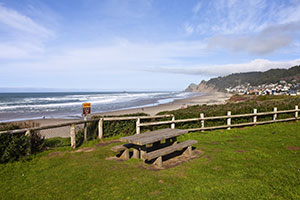

Visit Us!
The park offers quiet and social spaces on a first-come, first-served basis. Shaded picnic tables are great for lunch or reading. Benches along the trails provide peaceful spots to relax. Open-air pavilions and grassy areas are perfect for small gatherings and birthday parties. Whether alone or with friends, visitors can always find a welcoming space to enjoy.
Southridge Park is a great place for youth sports, with fields for soccer, baseball, and basketball. Local leagues give kids a chance to play, learn, and have fun. The soccer fields host exciting matches, while the baseball diamonds are perfect for little league games. The basketball courts are always busy with players practicing and competing. With leagues and open play, young athletes can stay active and enjoy the game.